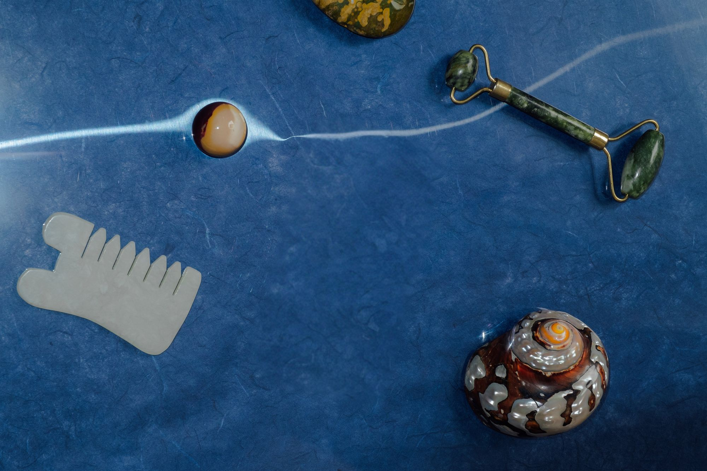
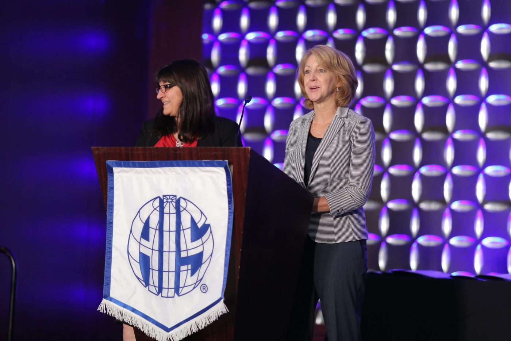
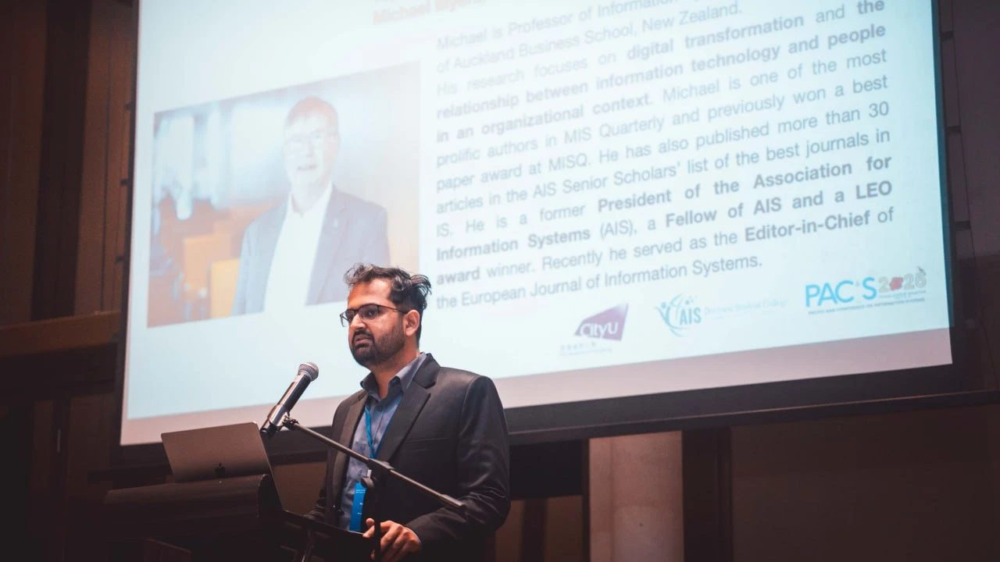
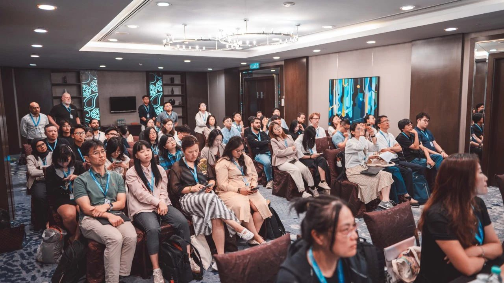
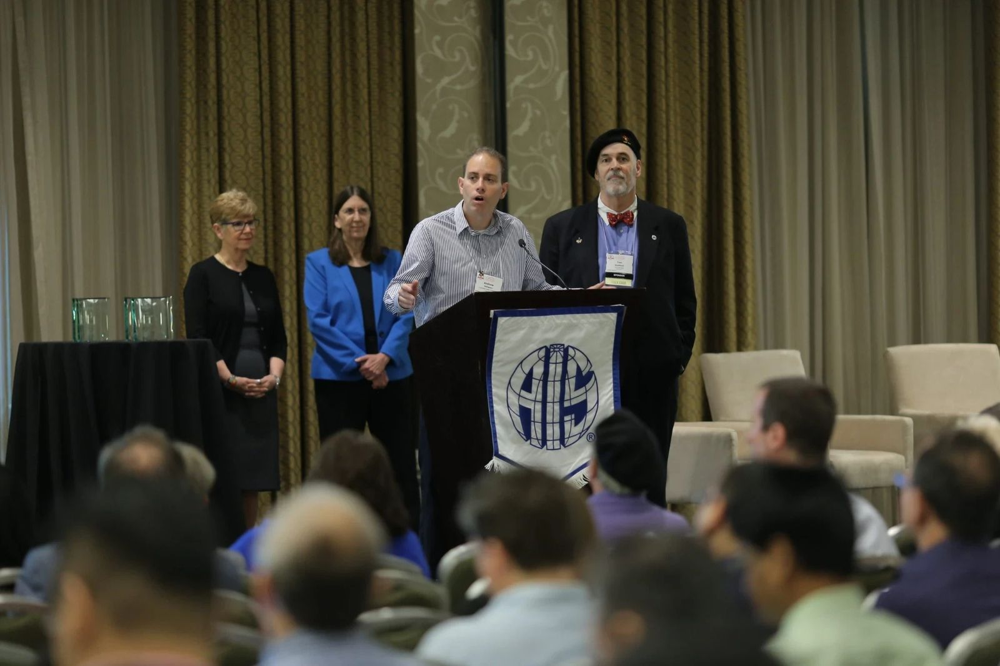
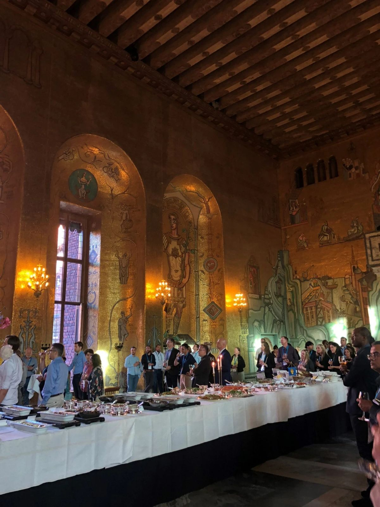
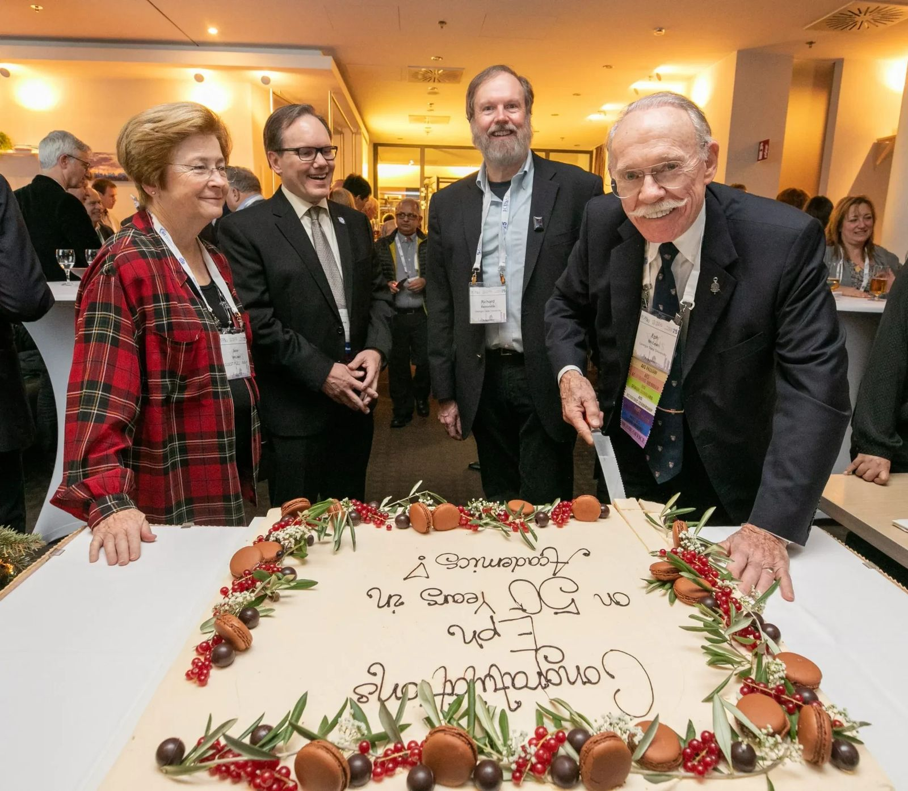

From workshops to national competitions, here’s what a year in AIS looks like.
Keep scrolling →
Student chapter — Naveen Jindal School of Management
Information Systems
Where UT Dallas students learn the tools, meet the people, and build the experience behind a career in technology.
Scroll(01) — Who we are
We promote the study and practice of information systems through professional development, technical workshops, and a community of students who like figuring out how technology and business fit together.

- 01Professional development
Résumé reviews, mock interviews, and career prep aimed at IS, analytics, and consulting roles.
- 02Technical workshops
Hands-on sessions in SQL, Python, cloud, data visualisation, and the tools employers actually use.
- 03Industry speakers
Talks and panels with professionals from the companies that hire UT Dallas students.
- 04Case competitions
Real business problems, tight deadlines, and a chance to present to judges from industry.
- 05Social events
Mixers, game nights, and outings that turn members into friends outside the classroom.
(02) — Events
Moments
that matter

01Speaker seriesIndustry voices, every month
02National conferenceCompete against the best IS chapters
03Awards & recognitionCelebrating the work
04Socials & receptionsWhere friendships start
05MilestonesA global community, 30+ years strong(03) — The team
Meet the officers
- Chinmayi MaddaliPresident
- Avi PandyaVice President
- Myiesha PanjwaniVP of Operations
- Aaron SenTreasurer
- Nirmal ShahTech Dev Officer
- Sanika TripathiHead of Marketing
(04) — Network
10,000+
AIS alumni building careers at the world’s leading banks, tech companies, and consultancies.
Goldman SachsJPMorgan ChaseMicrosoftAmazonGoogleDeloitteAccentureEYPwCKPMGGoldman SachsJPMorgan ChaseMicrosoftAmazonGoogleDeloitteAccentureEYPwCKPMG
Current partners Red Bull DoorDash
(05) — Get involved
Let’s talk
- Find us
- Jindal School of Management
800 W Campbell Rd, Richardson, TX